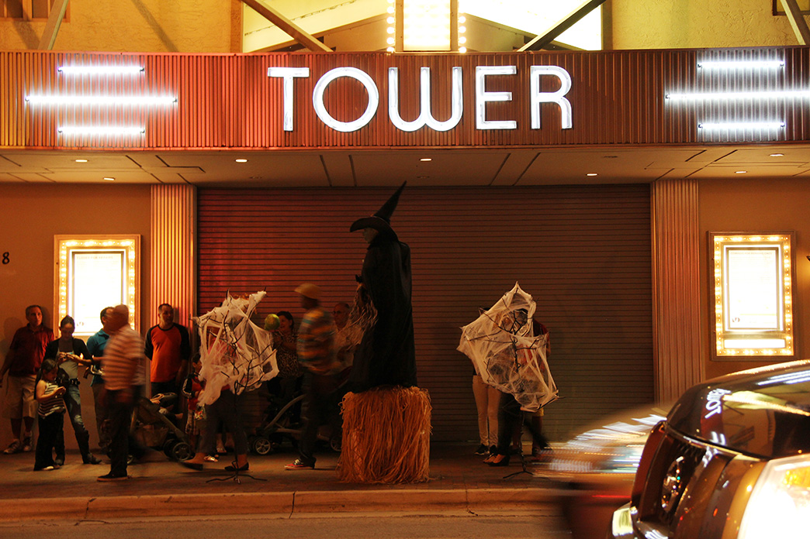
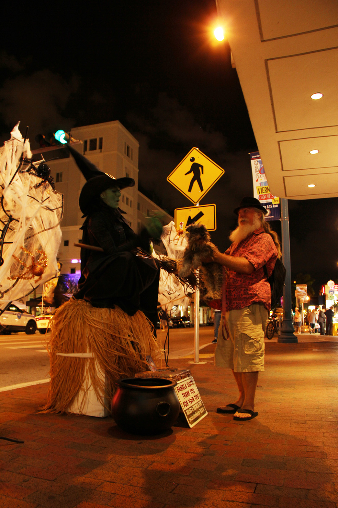
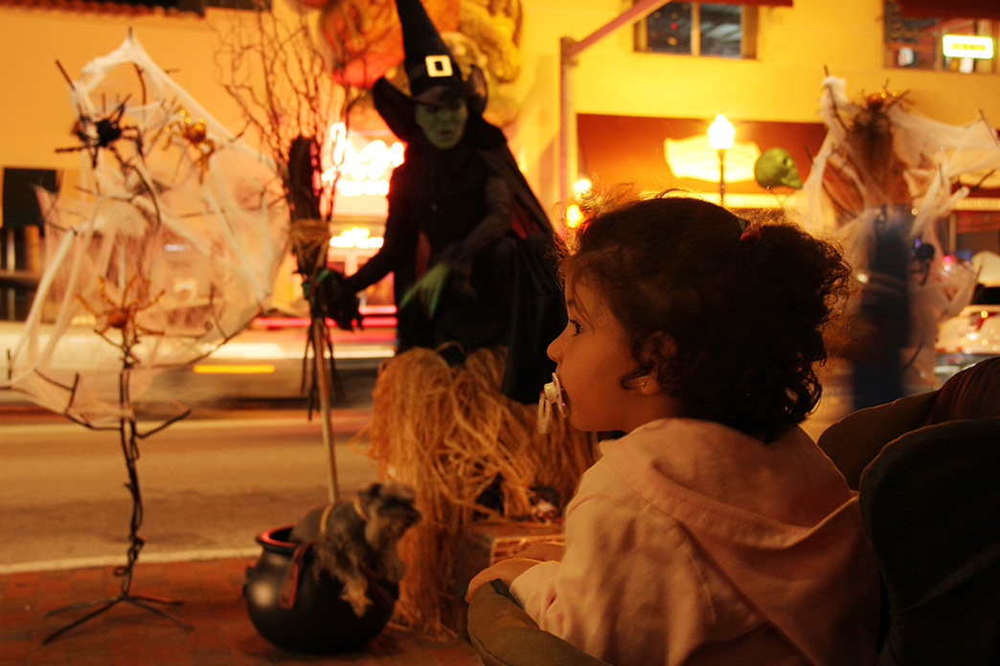
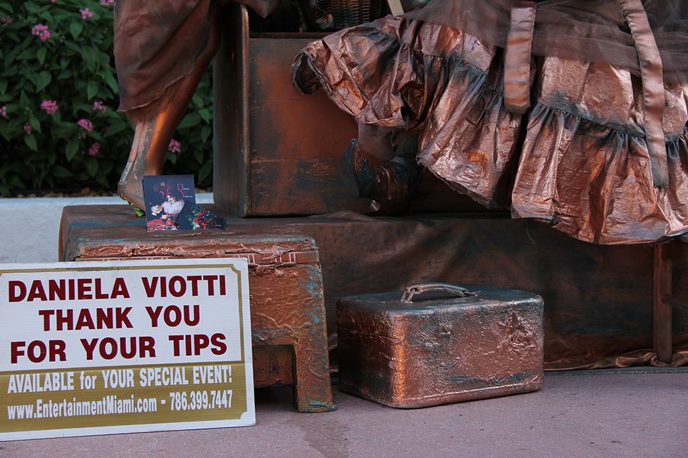
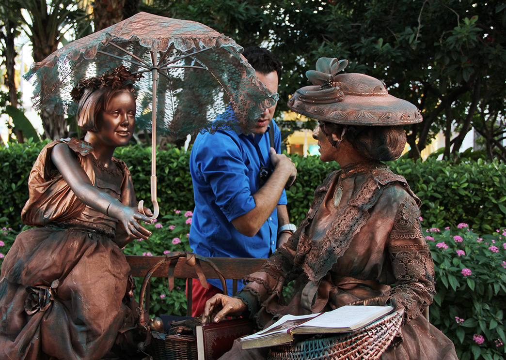
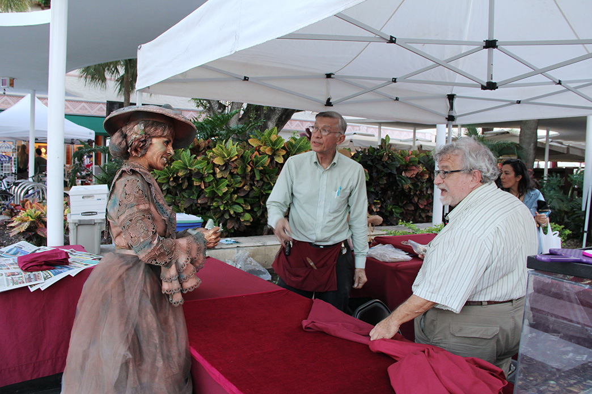
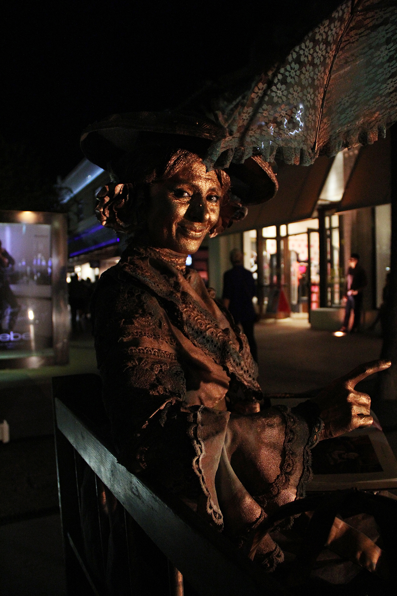
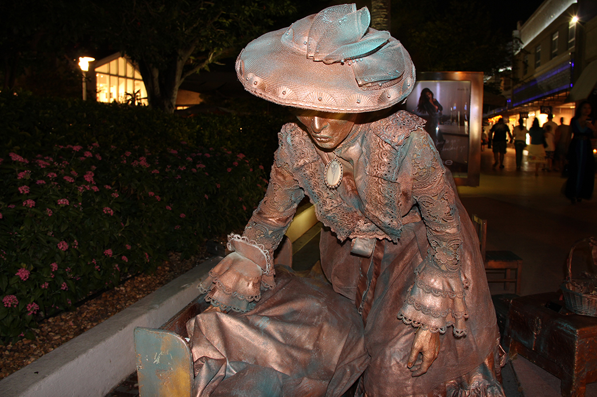

Every time she appears, it feels like a surprise. She is the witch in the Halloween story, asking the little girl ‘where is my dog’;
She is the golden-colored woman reading a book;
She is the angel;
She is the Statue of Liberty.
Daniela Viotti is the living statue on the street of Little Havana during Viernes Culturales, a showcase of art in an ethnic neighborhood that attracts thousands of people to the street on Friday nights.
Viotti said she started working as an artist in Cordoba, Argentina where she was born. Before she came to the United States in 1998, she had already received three top prizes in a national young sculptors competition in Resistencia Chaco, Argentina. What truly encouraged her to stay in America, she said, was the experience of meeting former U.S. President Jimmy Carter. That meeting opened her eyes to see the great potential to be explored in this country.
Four years later, in 2002, she herself decided to move to Miami, a city with a maturing arts community. Viotti was working in the Wynwood Art District in Miami where she met her close friend Mark Weiser, an experienced booking agent who started to take care of the booking of her performances.
She had been working in the top opera house, the Theatro Colon in Argentina. She once worked as a model and an assistant for Cesar Lopez-Claro, a fantastic theater director who was Picasso’s contemporary. But she said she wanted to bring her art to average people on streets, parks and even their sweet birthdays.
Viotti said she has been performing as a living statue in Little Havana for a decade. She said she gets a salary from the city for ‘being part of art in Little Havana’.
However, she said, that doesn’t pay all the bills. Most of her earnings, she said come from some commercial performances, such as party table performance in which she is dressed up like a pretty lady with a big table around her waist.
She met her husband Oscar Hidalgo, who worked for New York Times for four years, when he was working on his own assignment in Miami. Her beauty and the emotion she put into her roles captivated him, he said. One recent weekend, he helped her to set up the scene, chatted with her during a break and took pictures of her moments.
She said she wants to keep her private life private. The little ‘secret’ she never shows is the real her without costume and makeup. “I don’t want people to see me drinking a Coke,” she said. “It is just inappropriate. It could be a messy me”.
Viotti said she trained herself for a few years to blink only two to three times during an hour performance, unless winds and dust blow into her eyes. When she holds still, it’s hard to tell whether there is a living person under all that paint and makeup.
'Is she real?' is a common comment onlookers whisper to each other.
Viotti suddenly lifts her arms and hands them a book. Surprised, a few admirers catch the book and take a picture. Sometimes, they just leave their tips and walk by.
“I don’t mind if they don’t get it,” Viotti said, “Usually people enjoy being engaged in, especially when children come close. They are the cutest part. Some people are just shy. But all of them are nice to me. That’s is why I love to performance for all the people. How much love you give to that person, how much you will receive in return, I can see that.”